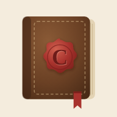

Condiciones de uso de Cuaderna
1. Quién ofrece Cuaderna
Cuaderna es una aplicación de Astillero Software, una actividad profesional dada de alta en España. Los datos del titular están en el aviso legal de astillerosoftware.es. Para cualquier consulta: hola@astillerosoftware.es.
Al usar Cuaderna aceptas estas condiciones y la política de privacidad.
2. Tu cuenta
- Entras con tu cuenta de Microsoft o de Google. Eres responsable de lo que se haga con ella y de mantenerla protegida.
- También puedes usar Cuaderna sin cuenta; en ese caso las notas solo están en tu dispositivo y algunas funciones no están disponibles.
- Puedes dejar de usar Cuaderna cuando quieras y pedir que borremos tu cuenta, como se explica en la política de privacidad.
3. Tus notas son tuyas
Todo lo que escribes, dictas, fotografías o adjuntas es tuyo. Se guarda en tu OneDrive o Google Drive, en la carpeta de Cuaderna, y no lo usamos para nada más que para que la app funcione. Nos das permiso solo para tratarlo cuando tú lo pides: por ejemplo, para ordenarlo con inteligencia artificial o pasar una nota a otra persona.
4. Versión gratuita y Cuaderna Plus
- Gratuita: incluye lo esencial de Cuaderna. Las funciones de inteligencia artificial y de voz pueden tener un límite de uso diario, que la app te indica.
- Plus: suscripción opcional, mensual o anual, con funciones avanzadas y límites más amplios. El precio aparece en Google Play antes de contratar, con los impuestos incluidos.
- Pago y renovación: Plus se paga a través de Google Play y se renueva automáticamente al final de cada periodo, salvo que lo canceles antes.
- Cancelar: en Google Play › Pagos y suscripciones, cuando quieras. Sigues teniendo Plus hasta el final del periodo pagado.
- Si cancelas no pierdes nada: todo lo que creaste con Plus sigue en tu nube y en tu Cuaderna; solo dejas de poder usar las funciones Plus para cosas nuevas.
- Devoluciones: se gestionan con Google Play según sus condiciones de reembolso. Si tienes un problema con un cobro, escríbenos y te ayudamos.
- Cambios de precio: si el precio cambia, te avisaremos con antelación y podrás cancelar antes de que se aplique.
5. Fundadores
Las personas que probaron Cuaderna antes de su lanzamiento y figuran como «fundadores» tienen sin coste y de por vida todas las funciones de Cuaderna, también las de Plus, con un límite diario de uso de inteligencia artificial y voz que la app te indica. Si necesitan más, pueden contratar Plus sin límites con un descuento especial para fundadores. Es un agradecimiento personal e intransferible.
6. Uso aceptable
Cuaderna es para organizar tus ideas, tareas y documentos. No está permitido:
- Usarla para algo ilegal, o para guardar o compartir contenido que vulnere derechos de otras personas.
- Intentar acceder a cuentas o datos ajenos, saltarse los límites de uso o atacar el servicio.
- Usar de forma automatizada o masiva las funciones de inteligencia artificial, voz o enlaces, o revender el servicio.
Si alguien incumple estas normas, podemos limitar o cerrar su acceso al servidor de Cuaderna. Sus notas seguirán en su propia nube.
7. Inteligencia artificial
Las funciones de inteligencia artificial (ordenar notas, leer tarjetas, resumir, contestar preguntas sobre tus notas) son una ayuda y pueden equivocarse. Revisa lo importante: fechas, importes, teléfonos o direcciones.
8. Disponibilidad y cambios en la app
Trabajamos para que Cuaderna funcione siempre, pero puede haber cortes por mantenimiento o por servicios de terceros (Microsoft, Google). Cuaderna se mejora a menudo: podemos añadir, cambiar o retirar funciones. Si retiramos algo que forma parte de Plus, te avisaremos con antelación.
9. Responsabilidad
Tus notas se guardan en tu nube, que es tu copia principal. Te recomendamos exportarlas de vez en cuando desde Más › Ajustes › Tus datos. Astillero Software responde de los daños que le sean imputables según la ley, pero no de pérdidas causadas por servicios de terceros, por un uso contrario a estas condiciones o por causas ajenas a su control. Nada de esto limita los derechos que te reconoce la ley como consumidor.
10. Cambios en estas condiciones
Si cambiamos estas condiciones de forma importante, te avisaremos en la app antes de que se apliquen. Si no estás de acuerdo, puedes dejar de usar Cuaderna y cancelar Plus.
11. Ley aplicable
Estas condiciones se rigen por la ley española. Si eres consumidor, puedes reclamar ante los tribunales de tu domicilio. También puedes usar la plataforma europea de resolución de litigios en línea.
Cuaderna, una app de Astillero · cuaderna.astillerosoftware.es